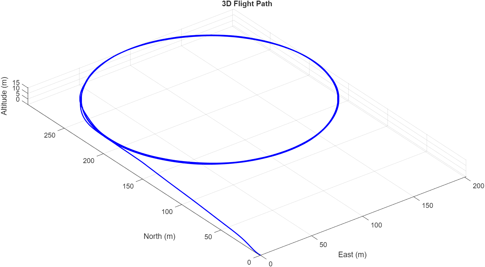
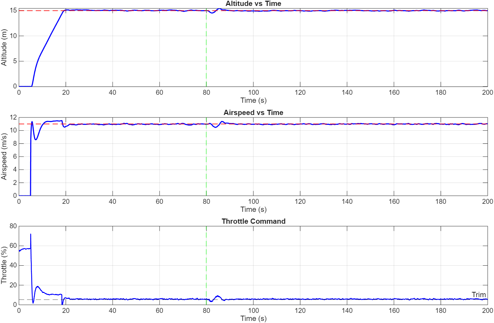
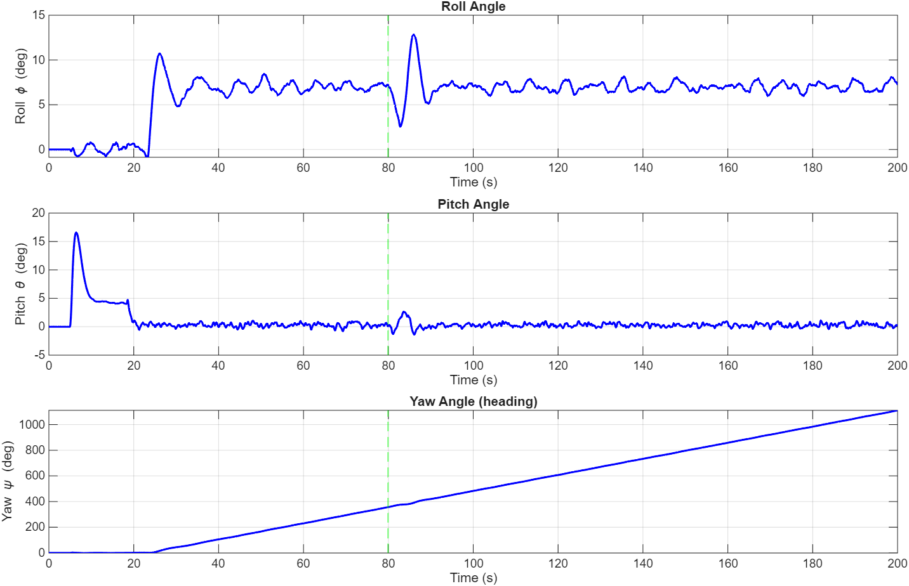
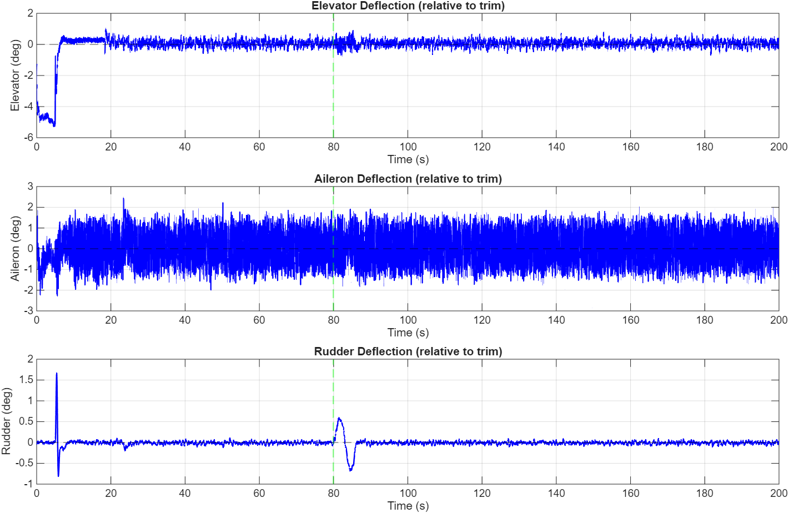

Overview
The goal of this project was to build a working fixed-wing autopilot entirely by myself rather than integrating an existing flight controller. The success criteria are as follows:
- A trustworthy state estimator: produces attitude, heading, altitude, airspeed, and position from low-cost sensors.
- A capable control system: holds attitude, altitude, heading, and airspeed, and follows simple guidance (climb, loiter).
- Flight-safe firmware: robust and safe enough to fly, including safe motor arming and a radio failsafe.
- Simulation-first validation: the design is validated rigorously in simulation before risking hardware.
The project is essentially split into two parts: A MATLAB simulation to design and validate, and a flight firmware that mirrors the simulation.
System architecture
The system is a single control pipeline running at 100 Hz

Overlaid on this is an RC link (Express LRS) which allows for manual control from a Radiomaster controller and acts as a hardware safety barrier because a loss of link triggers a failsafe that cuts the motor.
State estimation
The most important part of this project is the state estimation, done using a 15-state Extended Kalman Filter.
Fifteen states
NED position (3) and velocity (3), Euler attitude (3), and gyroscope bias (3) and accelerometer bias (3). Estimating the sensor biases as part of the state means drift is observed and accounted for.
Multi-rate correction
The gyroscope and accelerometer drive the prediction step while the barometer, magnetometer, and GPS correct it. Each has its own measurement model and gating — accelerometer updates are rejected during high rotation or when the specific force is far from 1 g.
Three layers
The original EKF worked on artificially generated readings but diverged to NaN on real hardware after disturbances on the bench. The filter now has three layers of protection.
Finding the fixes for the divergence was one of the most valuable parts of the project. The three layers of protection are:
- Joseph-form covariance updates keep the covariance matrix symmetric and positive. The original short-form update was algebraically correct but numerically unstable — it drifted indefinitely under aggressive motion, producing a sign-flipped gain that blows the state up. The Joseph form is algebraically equal but a sum of two symmetric positive terms, so the covariance stays positive by construction.
- An Euler singularity guard. Near ±90° of pitch the tan θ and sec θ terms in the attitude propagation blow up (gimbal lock) and the covariance diverges. These terms are bounded so the filter stays finite.
- A divergence recovery check. If any state or covariance element becomes non-finite, the entire matrix is scrubbed and then re-inflated with high initial variances, so a transient can never permanently disable the estimator.
Control system
The control system is a cascade PID design. The outer loop sets targets for inner angular-rate loops that drive the surfaces; an altitude loop commands pitch and an airspeed loop commands throttle.

The controller is built as two nested loops. The outer attitude loop compares the target attitude to the EKF estimate and produces an angular-rate command; the inner rate loop compares that command to the measured gyroscope rate and drives the control surface. This nesting makes the rate loop reject disturbances while the slower attitude loop sets where the aircraft points. The same structure is applied independently to roll, pitch, and yaw. Two outer guidance loops sit on top: an altitude loop that commands a pitch target, and an airspeed loop (a PI controller plus a climb-rate feedforward) that commands throttle.
Manual
The pilot's stick inputs pass directly to the surfaces, with mixing.
Hold
The instant the switch is flipped, the autopilot captures the current heading, altitude, and airspeed and flies straight-and-level to maintain them.
Autonomous
The autopilot holds altitude and airspeed and follows guidance maneuvers (circular loiter and return-to-launch) validated in MATLAB simulation.
- Arming lock: the motor is disarmed at power-up and only enables through a transmitter switch sequence, so the propeller cannot spin unexpectedly.
- Radio failsafe: loss of the RC link for more than 0.5 seconds cuts the throttle to idle and safes the control surfaces, acting as a hardware deadman switch.
- Ground gating: the controller integrators are frozen and the throttle held at idle until the aircraft is airborne, preventing integrator wind-up and accidental spin-up on the ground.
Simulation-first design
Before committing to hardware, the entire system was developed and tuned in a MATLAB 6-DOF simulation. The simulation models the aircraft as a rigid body, includes a trim solver to find the cruise operating point, and runs the same EKF, controllers, and guidance that later ran on the Teensy. This allowed the control gains to be tuned and the guidance maneuvers to be exercised without risking the airframe. It also confirmed that the aircraft had enough control authority across the entire flight envelope. The control surfaces used only about 5° of the roughly 25° available, giving a large margin before the first hand launch. The following figures show the full aircraft and control surface responses to a specific navigation flight profile (climb to 15m and loiter with a radius of 100m) in the previously mentioned MATLAB simulation. The green dashed line is a simulated gust of air in a random direction to analyze the response to a larger perturbation.




Hardware
The hardware components were chosen to be simple and affordable.
Calibration & flight test
Before any powered flight, several checks were carried out on the bench.
- IMU frame: the IMU's axis convention was resolved using gravity as a ground truth, which caught sign errors that would have inverted the controls.
- Magnetometer calibration: hard-iron calibrated to a clean sphere (the three axis spans agreed within about 2.5%) for a trustworthy heading.
- Control directions: every control surface was verified to deflect so as to oppose a disturbance, correcting the aircraft back toward level.
- Failsafe rehearsal: turning off the transmitter was confirmed to idle the motor and center the surfaces.

The aircraft was flown under manual control for the first flight test. It flew and responded correctly to control inputs, which validated the airframe, the CG location, and the direction of every control surface in flight. The autopilot modes are being tested through a conservative progression: manual flight first, then hold mode engaged at altitude, and finally fully autonomous flight. This ordering ensures that the autopilot's first flight is never also the airframe's first flight, so that any problem can be caught and recovered from manually.
What broke, and what I learned
- IMU failure: an IMU kept dropping in and out during testing, even after re-flowing the solder to improve the connection. It was concluded that the chip had been fried or failed under pressure or vibration; a more reliable IMU was ordered and replaced the faulty one.
- EKF divergence: the filter that worked in simulation diverged to NaN on the real hardware, due to a covariance losing positive-definiteness compounded by the Euler singularity at ±90°. Finding the fix for it was the most technically complex part of the project.
- Fail-safe: a dead barometer was feeding a NaN straight into the filter and killed the entire estimate. Now every sensor is treated as optional and every reading is validated, so a missing or faulty sensor degrades the system instead of crashing it.
Future work
- A robust PCB design for the sensors and wiring, to keep everything compact and reliably connected on one board.
- Waypoint navigation, onboard telemetry logging, and a fully autonomous mission flight.
- Eventually, LiDAR and optical-flow sensors for obstacle avoidance and GPS-denied flight.
Conclusion
This project produced a complete, self-built fixed-wing flight-control system: a robust 15-state estimator, a cascaded PID control architecture with manual, hold, and autonomous modes, and a MATLAB simulation used to design and test the whole system before flight. Building every layer myself, rather than configuring an existing autopilot, meant that each failure, from the numerical stability of the estimator to the physics of the airframe, became something I had to understand and fix. The result is both a working autopilot and a thorough understanding of how each piece fits together.